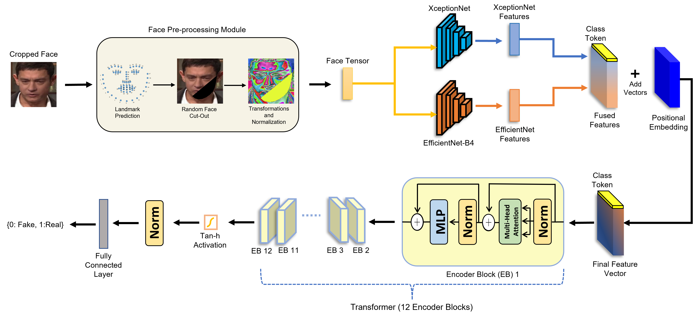

| ||||||
Sohail Ahmed KhanPhD Research Fellow MediaFutures, Department of Information Science and Media Studies, University of Bergen, Norway Email: sohailahmedkhan173@gmail.com, Mobile: +47-46244936 Resume • Google Scholar • Github • Linkedin | ||||||
My research interests lie in the areas of Computer Vision, Deep Learning and Multimedia Forensics. I previously worked as a Research Assistant under the supervision of Dr. Hang Dai, Assistant Professor, Computer Vision department, Mohamed bin Zayed University of Artifical Intelligence, Abu Dhabi, UAE. My research was focused on Deepfake Media Detection. Prior to that, I worked as a research intern at CYENS Centre of Excellence, Nicosia, Cyprus under the supervision of Dr. Alessandro Artusi.
Education
| University of Bergen, Norway
PhD in Computational Media Forensics Oct 2021 - Present | ||||||

| ||||||
| The University of Sheffield, United Kingdom
MSc in Cybersecurity and Artificial Intelligence Sept 2018 - Nov 2019 | ||||||

| ||||||
| COMSATS University Islamabad, Pakistan
Bachelor's of Science in Computer Science Sept 2013 - Sept 2017 | ||||||
Research Experiences

| ||||||
| Computer Vision Lab, Mohamed bin Zayed University of Artificial Intelligence, Abu Dhabi, UAE
Research Assistant Dec 2020 - May 2021 [Certificate] | ||||||
| DeepCamera MRG, CYENS Centre of Excellence, Nicosia, Cyprus
Research Assistant (Intern) Sept 2020 - Dec 2020 [Certificate] | ||||||
Research Papers

|
|
|  | |

|
|
|
Analysing the Impact of Global Demographic Characteristics Over the COVID-19 Spread Using Class Rule Mining and Pattern Matching
|
|

|
Adversarially robust deepfake media detection using fused convolutional neural network predictions
|

|
Phishing attacks and websites classification using machine learning and multiple datasets (A comparative analysis)
|